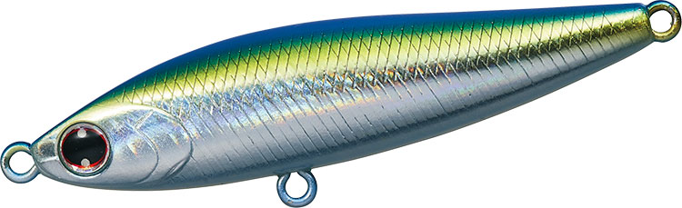
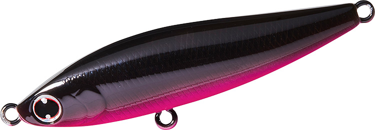
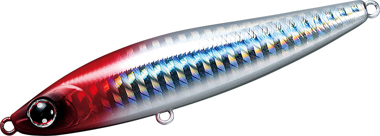

モアザン スイッチヒッター65S
（MORETHAN SWITCH HITTER 65S）
モアザン スイッチヒッター65SはDAIWA（ダイワ）のシンキングペンシルです。
小沼正弥氏監修の「スイッチヒッター」シリーズの最小サイズ。65mmの小粒ボディながらジグ並みに飛び、不規則なスラロームで食わせます。公式でも「バチ抜け攻略にもオススメ」とされ、底バチを狙う中層〜ボトムの釣りの定番です。

画像出典:DAIWA公式HP
スペック
- メーカー
- DAIWA（ダイワ）
- タイプ
- シンキングペンシル（シンキング）
- 全長
- 65mm
- 自重
- 13.4g
- 有効レンジ
- 約0.2〜0.8m
- フック
- #10トレブル
- リング
- #2
- アクション
- 不規則スラローム
- 飛距離
- MAX 67.0m／Ave 65.7m
- ターゲット
- シーバス
- 価格
- 1,750円（税抜）
▼今すぐチェック

スイッチヒッター65Sの特徴
小粒ながらジグ並みに飛ぶ、バチ抜けにも強いシンペン
-
ローリング＋テールスライド
ローリングアクションに波長の大きいテールスライドを加え、微妙な流れの変化でスライドやフラつきが出る「食わせの間」をルアーが自動で作ります。
-
ジグ並みの飛距離
65mm・13.4gでMAX67.0m（メーカーテスト）。ミノーでは届かない遠くのボイルも射程に入り、爆風時でも釣りを成立させられます。
-
浮き上がりが早く、フォールも使える
浮き上がりが早いのでシャローも攻略しやすく、水平姿勢でユラユラ揺れながら沈むので、縦の攻略にも使えます。
-
バチ抜け・底バチの定番
公式でもバチ抜け攻略にオススメとされ、底バチの定番として中層〜ボトムを攻めるときに使われています。
スイッチヒッター65Sの使い方
操作は昼夜に関係なく、スローリトリーブのただ巻きが基本です。
プレッシャーの高いフィールドでは、ダウンクロスではなくアップストリームにキャストし、流されてくる小魚がシーバスの斜め前に現れるようなイメージで通すのがコツです。
スイッチヒッター65Sの得意な状況
バチ抜け、とくに底バチを中層〜ボトムで狙う場面。小粒で飛距離が出るので、風が強い日や、遠くでボイルしている小型ベイトのパターンにも対応できます。
ワンポイント
同じシリーズの85Sは同じ不規則スラロームでサイズアップした基準モデル。ベイトが小さいときやバチ抜けは65S、もう少しシルエットと飛距離が欲しいときは85Sと使い分けましょう。
スイッチヒッターシリーズの使い分け
| モデル | 全長／自重 | 得意な場面 |
|---|---|---|
| スイッチヒッター65S | 65mm／13.4g | 約0.2〜0.8m。不規則スラローム。バチ抜けや爆風時の遠投に（本記事のモデル） |
| スイッチヒッター85S | 85mm／20g | 約0.2〜1.0m。不規則スラローム。シャロー〜中層を遠投で探る基準サイズ |
| スイッチヒッター105S | 105mm／21.2g | 約0.2〜0.8m。スローシンキングのワイドS字スラローム |
65Sと85Sは同じ「不規則スラローム」でサイズ違い、105SはS字スラロームのスローシンキングで性格が少し違います。ベイトの大きさと、届かせたい距離・レンジで選び分けましょう。ほかに浮き上がりを早くした85S-LV、120S+R、フローティングの105F・120F+Rもあります。
人気カラー
公式ラインナップから4色を紹介します（ブラピンとレーザーレッドヘッドの画像はシリーズ共通の画像です）。
 アデルバーニングイワシ
アデルバーニングイワシ
アデル仕様のフラッシングで目立たせるイワシ系。デイゲームのサーチに。

アデルキビナゴキビナゴを意識した細身のベイトカラー。小型ベイトのパターンに。

ブラピン背中のブラックとピンクのコントラストでシルエットを出すカラー。ナイトゲームの定番色。

レーザーレッドヘッドレーザーのフラッシングとレッドヘッドの定番系。濁りやローライトにも。
画像出典:DAIWA公式HP
スイッチヒッター65Sに似ているルアー
-
 モアザン スイッチヒッター85S
DAIWA
詳細はこちら＞
モアザン スイッチヒッター85S
DAIWA
詳細はこちら＞
同じスイッチヒッターの85mm・20g。同じ不規則スラロームで、もう少し大きなシルエットと飛距離が欲しいときに。
-
 モアザン ガルバ64S
DAIWA
詳細はこちら＞
モアザン ガルバ64S
DAIWA
詳細はこちら＞
全長64mm・自重9.7gのシンキングペンシル。同じダイワの小型シンペンとして。
-
 アービン60S
ブルーブルー
詳細はこちら＞
アービン60S
ブルーブルー
詳細はこちら＞
全長60mm・自重6.5gのシンキングペンシル。マイクロベイトに合わせた、より軽い小型シンペン。